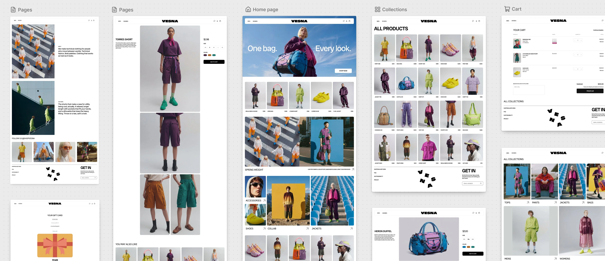
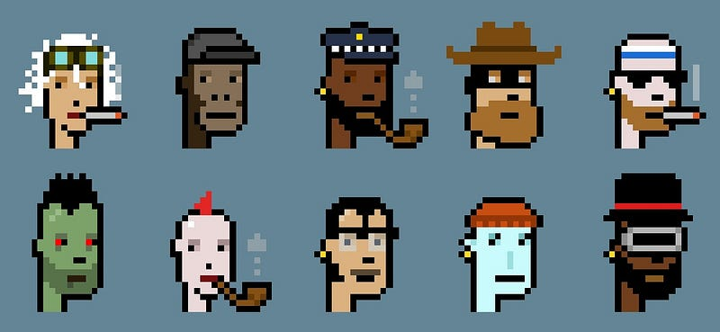
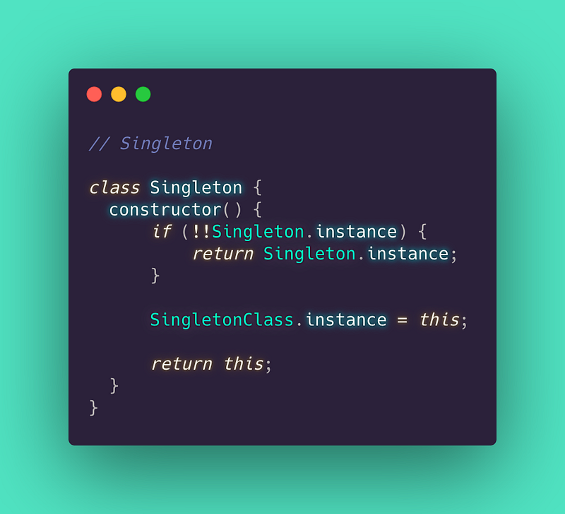

Readme.md
Notes on Shopify, JavaScript, and how a storefront actually gets built.
Latest writing
Essays and technical notes from the work. Shopify themes, JavaScript, and the wider stack — newest first.
Shopify Canvas: what it does and where it could help
· 3 min read

Canvas brings Shopify theme design into a shared visual workspace with Sidekick. I look at what it can do, where it could help, and the limits that matter for developers.
A Developer’s Technical Breakdown of Shopify’s Horizon Theme
· 10 min read
Horizon is Shopify’s latest flagship Online Store 2.0 theme, launched as a bold alternative to Dawn. Designed for brands that want visual storytelling, interactive product reveals, and editorial-style layouts, Horizon…
A Developer’s Technical Breakdown of Shopify’s Dawn Theme
· 5 min read
This might be a few years late but when Shopify released the Dawn theme, it wasn’t just offering merchants a new storefront design — it was introducing a new standard for theme development. As the first theme built…
ITerm 2 & ZSH script for Git Branch
· 2 min read

Every developer who has a Mac has used the standard Mac terminal that comes straight out of the box. Now it works and you can do all your usual stuff but do you want to upgrade that bog standardness and get something a…
NFTs. What are they all about?
· 6 min read

Non Fungible Tokens or (NFTs) as they are known are becoming all the rage in the blockchain and crypto world.
5 Important Software Design Patterns…
· 5 min read

Design patterns are a kind of template or description for software design. They can help with problem-solving in various different situations and are usually best practices that a programmer can use to solve problems…
Can Apple make the future Augmented…
· 6 min read

You’ve probably heard of augmented reality (AR) and virtual reality (VR) and even used them in some capacity. AR though is going to become big, possibly even bigger than smartphones in the future.
DeFi.
· 9 min read
An important piece in the crypto world is the use of stable coins. Currently the most widely used are the Dai stable coin, the USDC, and Tether stable coin.
Why I started coding.
· 4 min read
It has taken me a long time but I finally feel like I have found something that I thoroughly enjoy. My journey so far through web development and coding has been insightful, fun, and fulfilling.
Wireless Charging. Potential disaster or nothing to be concerned about?
· 6 min read
Wireless charging made it into a few tech publications recently because of its efficiency issues.
Why I’m Excited For Neuralink and the potential for Symbiosis With AI
· 4 min read
Some of my all-time favorite movies, TV shows, and games share this theme of the cyberpunk / dystopian future where people in society are one with technology.
5 Ways Blockchain Will Be Important In The Future.
· 13 min read
You’ve probably heard of cryptocurrency and Bitcoin. Maybe your friends have talked in the past about it and excitedly told you about how it's going to be the next big thing and your missing out if you don’t get…
Let's build something
Looking for a developer who can take a brief from design through to a live, maintainable product? I can help with Shopify themes, React or Vue apps, Node and Express APIs, and the full delivery cycle.
Get in touch
Tell me about the project. A short note on the brand, the brief, and where you are in the build is enough to start.
© JLT Digital. All rights reserved. Home